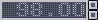
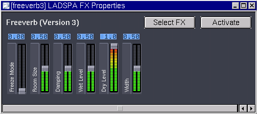

- Table des matiËres
- 1. Introduction
- 1.1. Tlchargement
- 1.2. Compilation
- 1.3. Configuration du pilote audio
- 1.3.1. Le pilote OSS
- 1.3.2. Le pilote Jack
- 2. Interface graphique
- 2.1. La bare d'outils principale
- 2.2. Editeur de Morceau
- 2.3. Editeur de motif
- 2.4. Table de mixage
- 2.5. Les plug-ins LADSPA
- 2.6. Menu
- 2.6.1. Prfrences
Chapitre 1. Introduction
1.1. Tlchargement
La dernire version stable de Hydrogen est disponible l'adresse http://hydrogen.sourceforge.net
Vous pouvez galement tlcharger directement les sources depuis les snapshots CVS avec :
bash$ cvs -z3 -d:pserver:anonymous@cvs.hydrogen.sourceforge.net:/cvsroot/hydrogen co libhydrogen
bash$ cvs -z3 -d:pserver:anonymous@cvs.hydrogen.sourceforge.net:/cvsroot/hydrogen co hydrogen
1.2. Compilation
Aprs avoir tlcharg et dcompress les archives .tar.gz, il n'y a plus qu' tapper :
bash$ cd hydrogen-* bash$ ./configure bash$ make bash$ su -c "make install"
Avant de compiler, vrifiez si vous ne souhaitez pas utiliser l'une des options additionnelles avec :
bash$ ./configure --help
1.3. Configuration du pilote audio
Il est trs important de choisir le bon pilote audio pour votre systme car ce choix peut avoir une importance non ngligeable sur les performances gnrales du logiciel. Vous avez le choix entre les pilotes OSS et Jack.
1.3.1. Le pilote OSS
Le pilote OSS utilise /dev/dsp et est bas sur l'interface OSS qui est utilisable avec la pluspart des cartes sons disponibles sous Linux. Cela dit, l'utilisation de OSS bloque /dev/dsp jusqu' ce que Hydrogen soit ferm, rendant son utilisation par d'autres logiciels impossible.
1.3.2. Le pilote Jack
Le pilote Jack ncessite que son serveur (Jack Audio Connection Kit) soit actif pour fonctionner. Il s'agit d'un serveur audio professionel qui permet une latence trs faible et des changes avec d'autres logiciels musicaux. Nous vous recommandons fortement son usage si vous voulez tirer le meilleur d'Hydrogen.
Chapitre 2. Interface graphique
2.1. La bare d'outils principale
Avant de nous occuper des deux fentres principales, jetons un coup d'oeil sur la barre d'outils :

 Joue un morceau ou un motif [Hotkey = Spacebar]
Joue un morceau ou un motif [Hotkey = Spacebar] Stoppe un morceau ou un motif [Hotkey = Spacebar]
Stoppe un morceau ou un motif [Hotkey = Spacebar] Active le mode 'Motif'.
Active le mode 'Motif'. Active le mode 'Morceau'.
Active le mode 'Morceau'. Change le tempo (chelle : 40-300 bpm) [Vous pouvez galement le faire l'aide des touches +/- du clavier et de la molette de la souris !]
 Indicateur de charge CPU.
Indicateur de charge CPU. Indicateur d'vnements MIDI.
Indicateur d'vnements MIDI. Cliquez pour activer le mode Jack esclave : Hydrogen fonctionnera comme 'esclave' d'un autre programme maître (ex. Ardour). Cet applet est utilisable uniquement si vous utilisez le pilote audio Jack.
Cliquez pour activer le mode Jack esclave : Hydrogen fonctionnera comme 'esclave' d'un autre programme maître (ex. Ardour). Cet applet est utilisable uniquement si vous utilisez le pilote audio Jack.
Autres raccourcis clavier utiles (non configurables pour l'instant) :
-
[CTRL + O] = Ouvrir un morceau
-
[CTRL + S] = Enregistrer un morceau
-
[Backspace] = Relancer le morceau (ou motif) depuis le dbut.
2.2. Editeur de Morceau
La fentre "Editeur de morceau" (Fig. 1) montre le morceau en cours d'dition ; chaque ligne reprsentant un motif, ce qui permet de les combiner pour crer le morceau, la lecture d'un motif tant reprsente par une croix. Avec ce systme, mme un changement mineur (par example une ouverture de charleston sur le quatrime temps) oblige crer une nouvelle ligne. Vous pouvez ajouter ou supprimer ces croix seulement de manire squentielle, et une fois cres, elles ne peuvent tre effaces que si une autre est prsente dans la mme colonne (par exemple si vous voulez choisir un autre motif parmi ceux crs). Pour laisser un blanc de une mesure, utilisez un motif vide !
La fentre comprend galement 5 boutons :
 Cre un nouveau motif (vous demande un nom)
Cre un nouveau motif (vous demande un nom)
 Dplace le motif slectionn d'un rang vers le bas
Dplace le motif slectionn d'un rang vers le bas
 Dplace le motif slectionn d'un rang vers le haut
Dplace le motif slectionn d'un rang vers le haut
 Ouvre le menu permettant de modifier les proprits du morceau (nom, auteur,
commentaires), d'effacer la squence de motifs ou tous les motifs du morceau.
Ouvre le menu permettant de modifier les proprits du morceau (nom, auteur,
commentaires), d'effacer la squence de motifs ou tous les motifs du morceau.
 Joue le morceau en boucle
Joue le morceau en boucle
Sous ces boutons, vous trouverez une liste des motifs crs et quand ils seront jous. Cliquez sur une case vide pour jouer le motif (apparition d'une croix) ou sur une case contenant une croix pour l'effacer. Cliquer avec le bouton droit de la souris sur un motif ouvrira un menu permettant de modifier son nom, de le copier ou de le supprimer. Notez qu'il est impossible de crer deux motifs portant le mme nom !

Fig. 1 L'diteur de morceau
2.3. Editeur de motif
La fentre "Editeur de motif" (Fig. 2) permet de crer ou de modifier le motif actif,
d'ajouter ou de supprimer des notes et de rgler l'intensit des notes. Le menu droulant
"Rsolution de la grille" sert modifier la rsolution pour pouvoir ajouter des notes de valeur
plus faible. Il est possible de la rgler sur les modes 4 (noires), 8 (croches), 16 (doubles
croches), 32 (triples croches) et 64 (quadruples croches) ou sur les modes ternaires
correspondants 4T (triolets de noires), 8T (triolets de croches), 16T (triolets de doubles), 32T
(triolets de triples) et 64T (triolets de quadruples). Vous pouvez galement rgler la dure effective du motif gr√¢ce au menu "Taille du motif" situ en haut droite de la fentre
(attention, il est gradu en demi-temps !).
Slectionner un instrument qui a au moins une note fera apparaitre des barres verticales en
dessous de chacune d'entre elles dans la partie la plus infrieure de la fentre. Elles servent
modifier l'intensit des notes.
Le bouton
 (entendre les notes ajoutes) active ou dsactive la praudition des notes
ajoutes au motif.
(entendre les notes ajoutes) active ou dsactive la praudition des notes
ajoutes au motif.

Fig. 2 L'diteur de motif
Vous pouvez galement enregistrer directement une partie en cliquant sur qui active l'enregistrement direct depuis une source MIDI ou le clavier selon la liste suivante (touche/instrument) :
Notez que le nom de l'instrument dpend du drumkit utilis. Cette liste concerne GMKit, le kit par dfaut. La position de l'instrument, cependant, reste la mme.
Z = Kick (grosse caisse)
X = Snare Jazz (caisse claire jazz)
C = Snare Rock (caisse claire rock)
V = Tom Low (tom grave)
B = Tom Mid (tom mdium)
N = Tom Hi (tom basse)
M = Cowbell (cloche)
Q = Ride Jazz
W = Ride Rock
E = Instrument No. 17 (non assign actuellement)
R = Instrument No. 18 (non assign actuellement)
T = Instrument No. 20 (non assign actuellement)
Y = Instrument No. 22 (non assign actuellement)
U = Instrument No. 24 (non assign actuellement)
S = Stick (clap baguettes)
D = Hand Clap (clap mains)
G = Closed HH (charleston ferme)
H = Pedal HH (charleston au pied)
J = Open HH (charleston ouvert)
2 = Crash
3 = Crash Jazz
5 = Instrument No. 19 (non assign actuellement)
6 = Instrument No. 21 (non assign actuellement)
7 = Instrument No. 23 (non assign actuellement)
Un mode <<†Quantize†>> trs utile est activable en cliquant sur . Lorsqu'il est activ, vos sons se placeront automatiquement sur les valeurs autorises par la grille slectionne.
Voici une rfrence rapide adaptant la liste ci-dessus un clavier MIDI.

2.4. Table de mixage
La fentre "Table de mixage" (Fig. 3) est utile pour rgler le volume global du kit de percussions ou
celui de chaque instrument du kit.
Elle affiche le niveau actuel (cliquez sur
 pour le dsactiver, utile sur des vieux CPUs) et le volume maximal autoris (utilisez le bouton pour le modifier), permet de modifier le panoramique
pour le dsactiver, utile sur des vieux CPUs) et le volume maximal autoris (utilisez le bouton pour le modifier), permet de modifier le panoramique
 , de jouer une piste seule
, de jouer une piste seule
 , couper une piste
, couper une piste
 , charger un sample au format WAV/AU/AIFF pour un instrument
, charger un sample au format WAV/AU/AIFF pour un instrument
 ou prvisualiser cet instrument
ou prvisualiser cet instrument
 . Ce dernier boutons s'illumine lorsque l'instrument est jou. Selectionner un instrument dans l'diteur de motif provoque l'affichage d'une bordure verte autours de celui-ci dans la table de mixage.
. Ce dernier boutons s'illumine lorsque l'instrument est jou. Selectionner un instrument dans l'diteur de motif provoque l'affichage d'une bordure verte autours de celui-ci dans la table de mixage.
Double cliquer sur le nom d'un instrument ouvrira une boite de dialogue pour modifier ses proprits. Cliquer sur FX (dans la colonne de gauche) vous permettra d'appliquer quelques effets.

Fig. 3 La table de mixage
Ces quatre boutons ronds dans chaque piste sont les niveaux pour les plug-ins LADSPA. Lisez la section suivante pour plus d'informations sur ces derniers.
2.5. Les plug-ins LADSPA
Hydrogen peut appliquer des effets aux sons en utilisant n'importe quel plug-in LADSPA. Vous devez pour cela avoir install les sources de LADSPA (tarball/rpm/apt disponibles l'adresse http://www.ladspa.org). Installez ensuite un ou plusieurs de ces plug-ins l'aide de la commande "make && make install" :
Des plug-ins SWH sont disponibles l'adresse http://plugin.org.uk. Notez que pour les compiler, vous aurez besoin de l'archive de FFTW disponible sur http://www.fftw.org.
CMT tlchargeables sur http://www.ladspa.org.
TAP tlchargeables sur http://tap-plugins.sf.net.
Une fois quelques plug-ins installe, ouvrez Fichier -> Prfrences -> Gnral et vrifiez si le chemin est correct (l'installation depuis les sources se fait par dfaut dans /usr/local/lib/ladspa, par example), puis ouvrez un morceau auquel vous aimeriez ajouter un effet et slectionnez un instrument. Dans la table de mixage, cliquez sur
 et slectionnez une des quatre pistes d'effets disponibles (Fig. 3a). Cliquez sur le bouton
et slectionnez une des quatre pistes d'effets disponibles (Fig. 3a). Cliquez sur le bouton
 , puis sur <<†Choisir effet†>>: ceci ouvrira une autre fentre (Fig. 3b) qui vous permettra de choisir un effet parmi ceux installs, ils sont lists par ordre alphabtique et par catgorie. Ensuite <<†Activez†>> l'effet, ajustez les niveaux si vous voulez et retournez la table de mixage : lancez le morceau et clatez vous ! Chaque bouton rond dans la piste de la table de mixage contr√¥le le niveau d'un effet de haut en bas : le premier est l'effet 0, tle deuxime l'effet 1 et ainsi de suite. Si vous voulez rapidement activer ou dsactiver l'effet, cliquez sur
.
, puis sur <<†Choisir effet†>>: ceci ouvrira une autre fentre (Fig. 3b) qui vous permettra de choisir un effet parmi ceux installs, ils sont lists par ordre alphabtique et par catgorie. Ensuite <<†Activez†>> l'effet, ajustez les niveaux si vous voulez et retournez la table de mixage : lancez le morceau et clatez vous ! Chaque bouton rond dans la piste de la table de mixage contr√¥le le niveau d'un effet de haut en bas : le premier est l'effet 0, tle deuxime l'effet 1 et ainsi de suite. Si vous voulez rapidement activer ou dsactiver l'effet, cliquez sur
.

Fig. 3a La boite de dialogue "Proprits de l'effet LADSPA".

Fig. 3b Selectionnez un effet.
2.6. Menu
Depuis les menus droulants, vous pouvez slectionner : Fichier-->'Enregistrer sous...' pour sauvegarder le morceau en cours au format .h2song, Fichier-->Exporter pour l'exporter au format WAV, Fichier--> Prfrences, Fentres--> Montrer les informations du systme audio et Fentres--> Montrer le gestionnaire du kit de batterie.
2.6.1. Prfrences
Depuis cet onglet (Fig. 4), vous pouvez configurer le pilote audio (OSS ou Jack) en changeant son la taille de son tampon ou son taux d'chantillonage ainsi qu'activer ou dsactiver le mtronome et rgler son volume.Vous pouvez galement activer certaines options comme "se connecter la sortie audio par dfaut" qui connecte simplement la sortie ALSA aux ports par dfaut (d